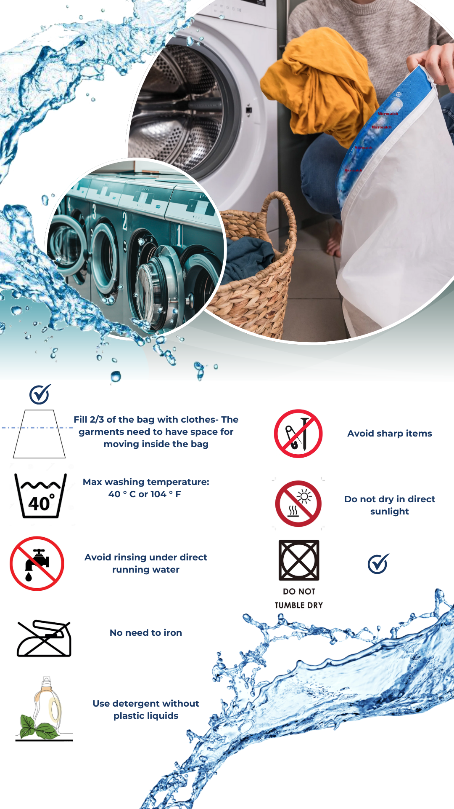

Product Name: MicroCatch
Brand: PureFlow
Batch Number: 1B2390XVMN
Manufacturing Date: March 19, 2025
Material Composition: Inner Layer: Material: 100% Flax (Linum usitatissimum)
Inner Layer: 100% Flax (Linum usitatissimum)
Origin: France
Supplier: Certified organic flax co-op
Weight contribution: ~45% of total product
Outer Layer: 100% Hemp (Cannabis sativa)
Origin: Romania
Supplier: Eco-certified hemp producer
Weight contribution: ~50% of total product
Coating: Cornstarch-based hydrophilic treatmentSupplier: Non-GMO maize (Germany)
Application: Water-based dipping and air-dried
Country of Production: Sweden
Facility Code: PF-BORÅS-TX01
Water Usage (per unit): ~1.2L (production):
Energy Type: 85% renewable energy
Labor Conditions: Fair trade certified production unit, ISO 45001 compliant
Filtration Efficiency: Captures >80% of synthetic microfibers per wash, Biodegradation Rates (Industrial Composting): 90–180 days, Biodegradation Rates (Home Composting): 6–24 months, Landfill: Yes (naturally degrades over time), Certifications: ISO 4484-2:2023, EU Ecolabel (in progress)
Composting: Cut or shred the bag for faster composting.
Add to industrial or home compost with food or yard waste.
Entire bag is 100% compostable: no disassembly required.
Landfill Disposal: If composting is unavailable, MicroCatch can safely go into general waste. Will naturally biodegrade over several years, unlike plastic alternatives.,
Take-Back Program: Return your used bag via our prepaid return envelope (subscribers only). We ensure proper composting or upcycling at certified facilities.
Subscription Plan: Get a new bag after every 8–12 washes. Old bags returned via mail for composting.
Upcycling Potential: Returned bags may be repurposed into biodegradable insulation or mulch before composting.
Pay-Per-Use Model: Bags available at partner gyms, hostels, and laundromats.
No hazardous chemicals used in any stage of production
Lab-Tested Filtration: 0.15 mm wet pore size, >80% microfiber capture
Biodegradability Testing: Composted successfully in 12 weeks (industrial)
Life Cycle Assessment: In progress (to be published Q3 2025)
Name: Amaresh Sarkar, Atharva Bawne
Email: (S2409888, S2413051)@student.hb.se
Address: Allégatan 1, 503 32 Borås